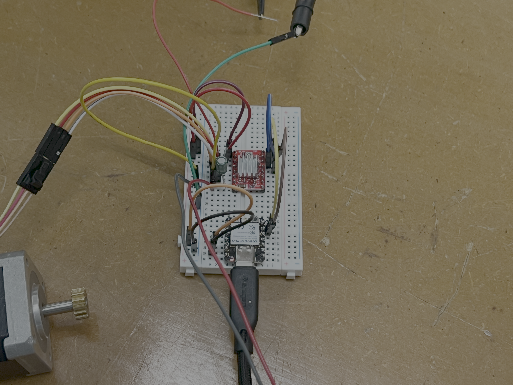
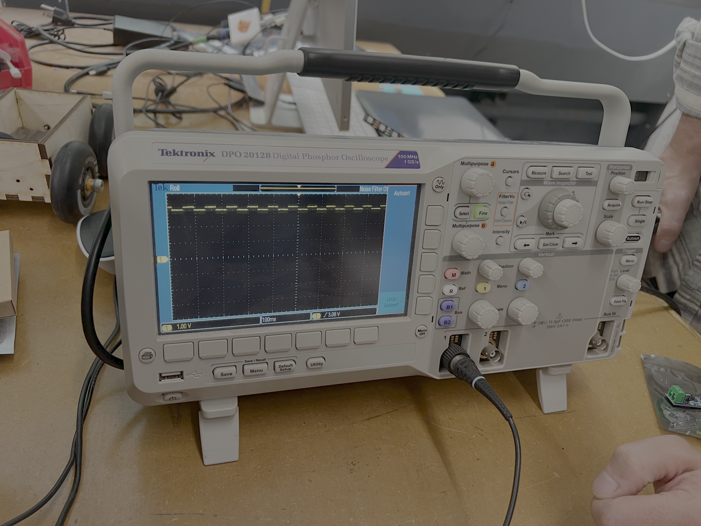
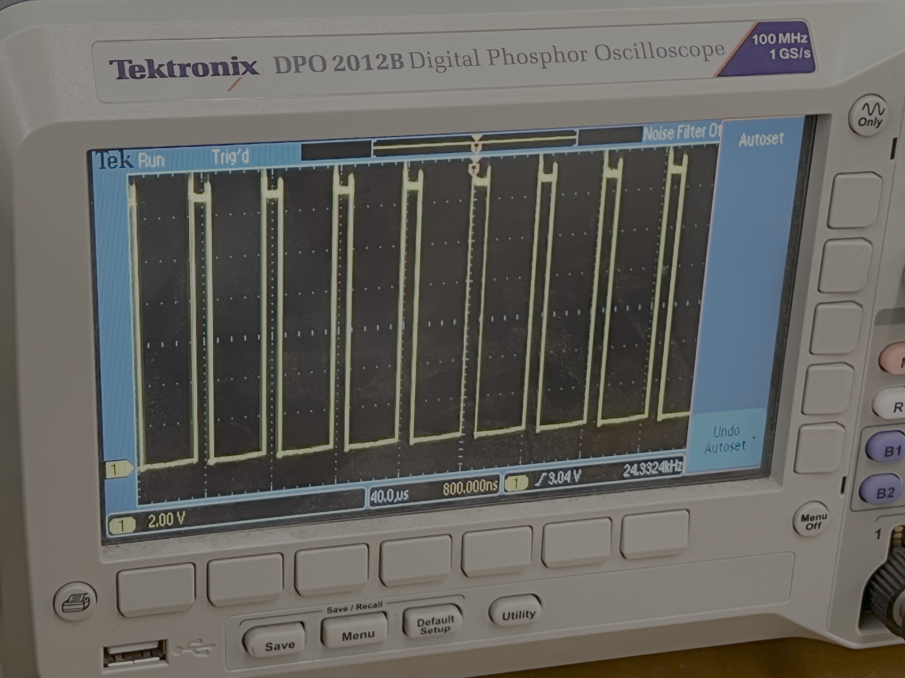
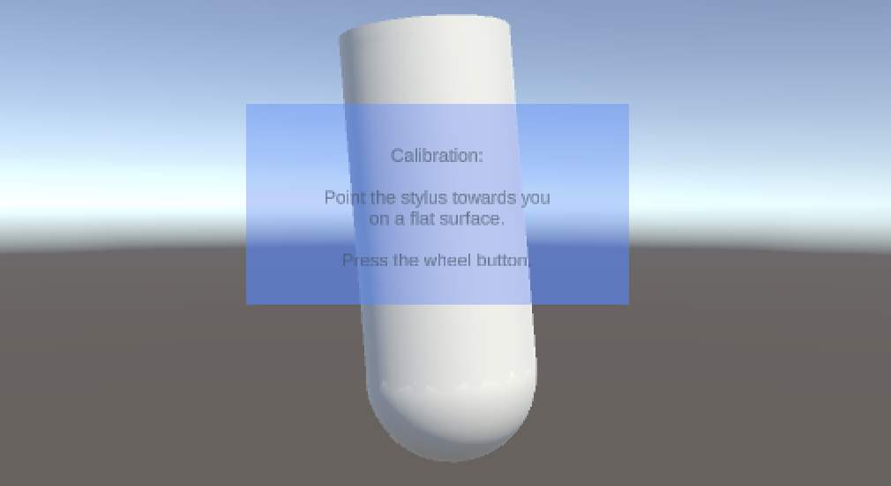
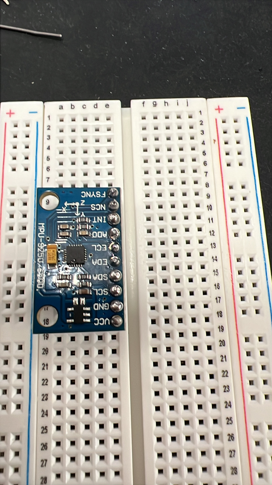
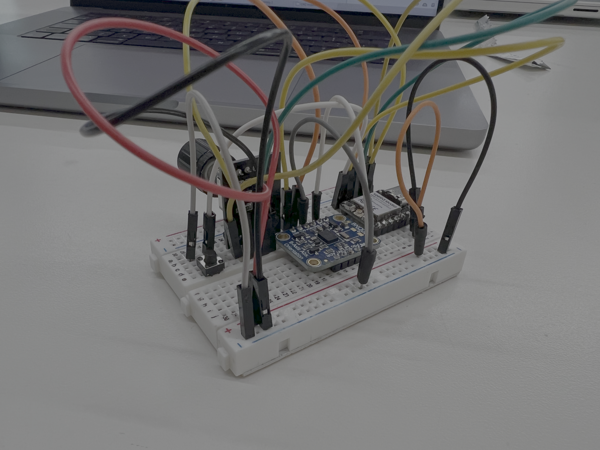
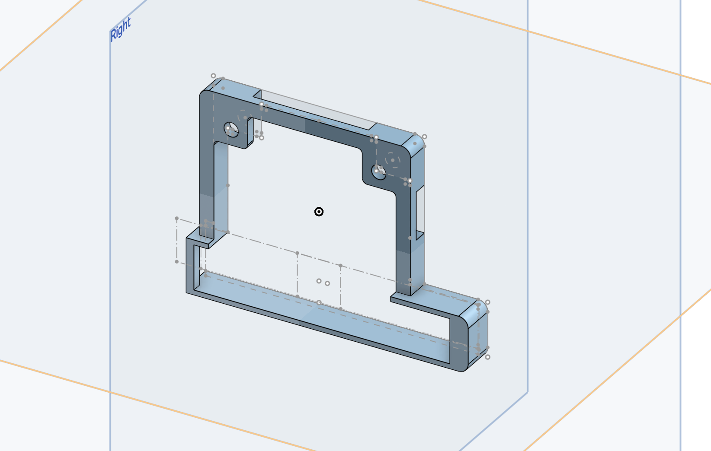
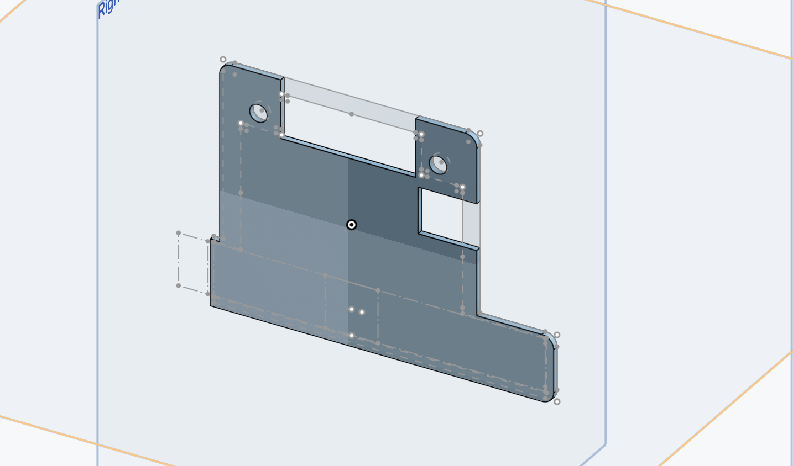
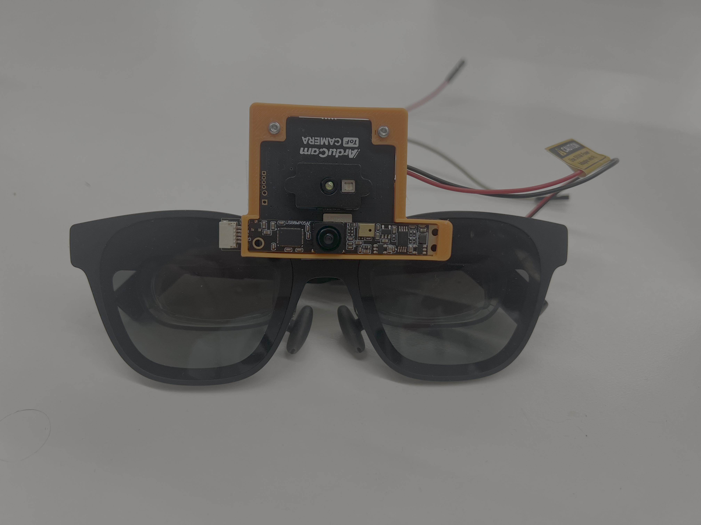
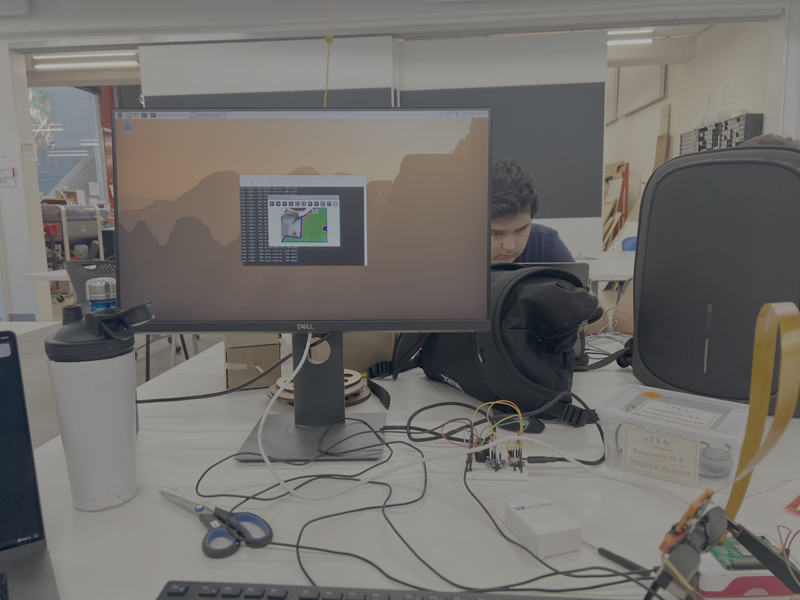

For this assignment, I worked with a partner to make a stepper motor work, and measure the voltage signal being provided to the motor using an oscilloscope.

The circuit used to power the stepper motor.
We setup the citcuit as shown above, using a capacitor in parallel with one of the two power supplies. What was surprising was just how much voltage the motor needed, but it made sense in the end due to the pairs of electromagnets being energised at alternating times to reliably move the motor through small angles.
Stepper motor moving.
We got the stepper motor to move, using the suggested code from the lab. This is shown in the video above, however the code makes the motor move at random times and in random directions so it was difficult to control when we should record as we did not know when it would move.


Initial & Adjusted Oscilloscope output.
To measure the voltage input to the stepper motor, we connected the oscilloscope probes to the ground and signal input pin on the Xiao. For some reason this produced the first image above, where the voltage jump was between 3V and 3.3V, rather than a full 0V to 3.3V. Even stranger was that when we pulled out one of the input pins to the driver board, the motor would of course stop moving, but the oscilloscope now displayed the expected voltage change of just over 12V, with a time period of approximately 200ms.
To start the MVP I decided to initially focus on the CAD stylus.

Unity user interface w/ mock stylus.
The glasses need to know the orientation and position of the stylus for CAD object manipulation, and have enough intuitive inputs that the user can easily change options on the fly whilst using the glasses. So I decided to incorporate a rotary encoder with a built in button, standalone button, and an IMU 6050 6-axis sensor.
I then programmed the ESP32 to use bluetooth to send data from each sensor to my Mac, which acts as the dummy for the main computer that the glasses will run off - a Raspberry Pi 5. See Week 8 - CNC for the full description on connecting the ESP32 to the Mac via bluetooth.
I programmed an intermediate Python script to receive the bluetooth connection from the stylus, and then inform the Unity interface before proceeding to a calibration screen. The calibration screen shows a mock stylus (Cylinder with half sphere) which moves as the stylus moves due to the 6-axis sensor.


Fake 9-axis sensor & Real 9-axis sensor implemented in stylus board.
I quickly discovered that 6-axis sensors suffer from drifting for yaw, because they do not know where true north is, and that a 9-axis sensor would be needed as it incorporates a magnetometer. I therefore ordered what was clearly described as an MPU-9250 board from amazon, only to discover that is was a fake and actually an IMU-6500.
Thankfully, Nathan found a BNO055 9-axis sensor in the workshop and gave it to me, which fixes the yaw drifting problem. My next steps with the stlyus involve designing and printing a full enclosure that holds all of the parts together cleanly.


Camera holder CAD parts & Real holder.
The next step was to then find a way to hold the depth and RGB cameras together in a fixed position and attach them to the glasses. This proved a lot more complicated than I imagined for several reasons: The cameras are both very different shapes and thicknesses, their sensors need to align vertically so that later I can do camera fusion, and I need to access all of the camera connectors easily. This led to many hours modelling each camera module and making some assumptions about protruding chips and capacitors to inform the thickness of the casing.
I decided to make the hoolder in two pieces. The front piece would allow the two camera to layer up and slot in perfectly, whilst a backplate would attach to the front using screws. This would leave the bottom halves unattached, but this would be remedied when mounting the cameras and holder to the glasses.

Mounted cameras.
The pieces fit together well, but the real difficulty came with attaching the holder to the bridge of the glasses whilst keeping the cameras centred. This was tough because the bridge has a highly irregular and curved geometry, which would require a tight fit 3d printed mount for the holder. Given this was not possible, Instead I decided to mount the holder using double sided tape, which actually works quite well as the holder does not move a lot. In future, beyond this project, I would end up designing a bridge mount, but due to time constraints could not.

Depth segmentation finding planes.
Finally, following the stylus calibration screen, the next screen on the UI is one where the user selects a plane to draw on. This plane is determined using real nearby planes in the real world and this is where the depth camera comes in. The idea is to detect points that are likely to align on the same plane and create enclosed shapes anchored in space to display to the user.
This was far more complicated than I expected and took a lot of iterations. This is because most true segmentation is done using AI, and whilst I could do this using the AI hat I have for the raspberry pi, it would take a lot time and effort. Ultimately, I got a just about acceptable plane finding code that worked in certain reasonable conditions. The next step for this is to send the coordinates of the corners of each plane to Unity.
I shall now move onto designing the stylus case, before connecting the plane finder to Unity.